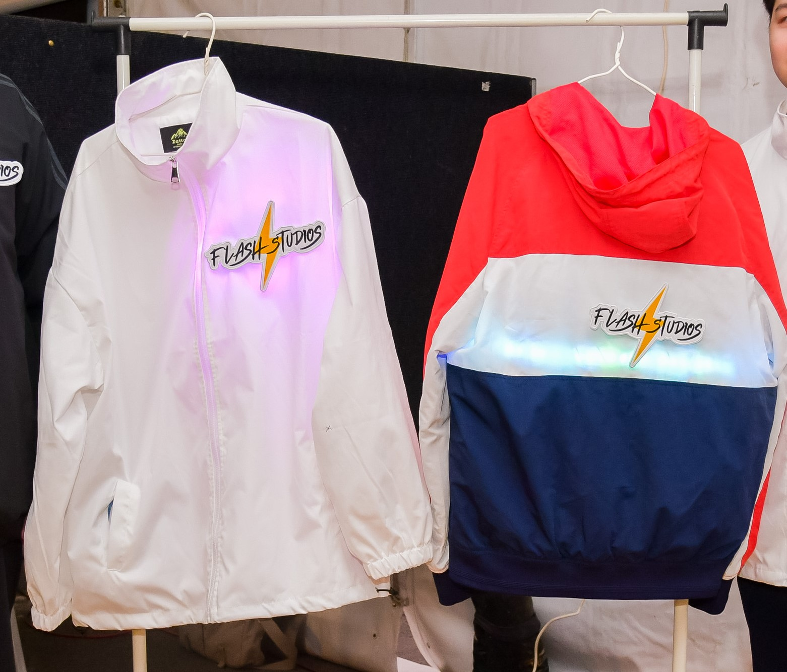
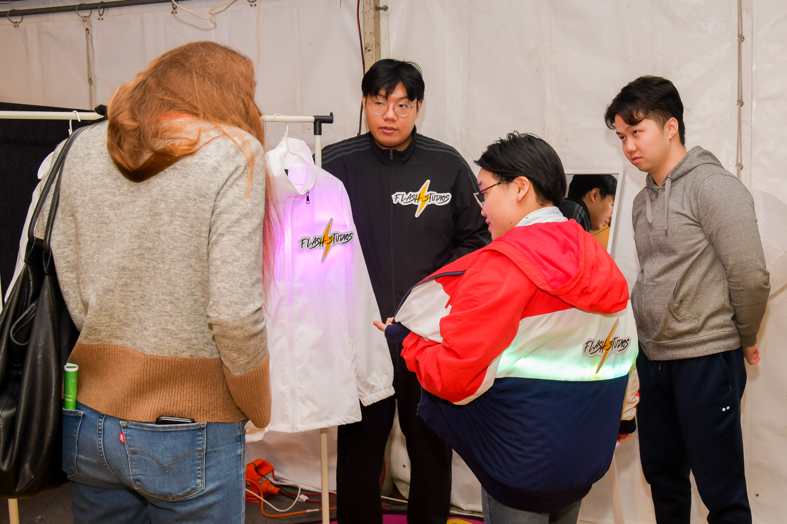
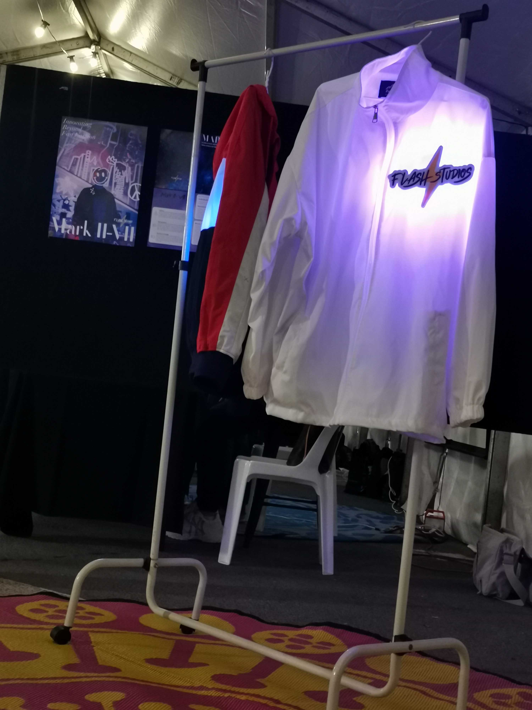

The functions implemented by our product
After three months of technical iteration, we present three functions on our final prototype: Neo fashion,
color switching by using physical token and interaction between users.
Neo Fashion
We use high-brightness LED strip to emit scattered lights to create the effect of neon lights, which are
rare in mainstream fashion elements.



Color Switching & Physical Token
We use RFID (Radio-frequency identification) to achieve the function of switching different color patterns
by reading different physical tags. It simulated the NFT token function in our concept through the scheme of
physical tokens.
Video1 Colour switching demo
Interaction between users
We use reed sensors to detect the interaction between users. When users hug, the reed sensor on the user's
hand touches the magnet on the back of another user, triggering patterns to change. Pattern changes
triggered by user interaction make clothes more dynamic and make Mark II-VIIs more involve in users' life.

figure 4 Sketch about redd sensor implement
figure 5 Reed sensor demo
Reflection
Because the flexible OLED scheme is too advanced, its cost and technical limitations far exceed the
realistic possibility, so we use LED to create an ambient light. In this process, how to place LED beads to
bring as much eye-catching effect as possible is what we need to consider. How to scatter light also takes
us a lot of work. Finally, under the
budget constraints, as shown in figures 1 and 2, we made the schemes of placing in the back and the
front, respectively. Although the use of LED strips is restrained, it can still show a shocking
effect in the dim light environment, as shown in figure 3. The scattered light creates a fancy atmosphere
for the surrounding. It reminds many people, including our team, of cyberpunk style, a cold, futuristic
sci-fi theme. The style quietly responds to the theme of Near-future. Of these two products, the one with
LED placed on the back is coloured. It is our experiment to try the possibility of matching
the lighting with the style design of the clothes themselves. However, in user testing and exhibition
feedback, most people still prefer white, which can maximize the neon lighting effect of our design. On the
other hand, we find that the material is also very important. Polyester fabric clothes can make the light
transmission to a certain extent, while cotton clothes will hinder the light, so both of our clothes are
made of polyester fibre.
In our final prototype, we abandoned the use of biometrics to generate user patterns due to technical
constraints and budget reasons. Still, it is acceptable that it will not damage the self-expression and
sustainable fashion concept of our clothing itself because these two do not rely on self-pattern generation.
At the same time, for the same reason, we can not make a complete set of virtual tokens and their related
blockchain algorithms and platform solutions, so we use RFID to achieve the colour switching scheme by using
physical tokens. I don't think there is much difference in user experience from virtual tokens to physical
tokens, and physical tokens can give users a clearer understanding of our concept when they come into
contact with Mark II-VII. The physical tokens are easier to be considered as a kind of asset and accepted by
non-technical users than NFT. So I think it is an equal alternative.
I think the functional implementation of user-to-user interaction differs significantly from our concept. We
completely ignored the difficulty of implementation in conceptual design. In the beginning, we wanted to use
Bluetooth to achieve the interaction between two Marks. But when we think about the implementation of the
algorithm, we find that we need one Mark as the host and the other one as the Bluetooth device to connect.
The relationship between two Mark is fixed without server assignment, which conflicts with the idea that any
Mark in our concept can be the host in user-to-user interaction. But if we want to implement such a scheme,
we need a server to process it, which is far beyond our ability. So we tried to find an alternative.
The alternative we chose at the beginning was the ultrasonic proximity sensor, which we even implemented on
the prototype. But it brings two problems. The first is that it will only judge whether an object is close
to Mark II-VII by distance, which will cause MarkII-VII to react to any objects within distance, which is a
far cry from the interaction between the two Mark users we imagine. If MarkII-VII can react to any object,
including inanimate objects, the social attributes we give to clothes through user interaction will be
greatly weakened. Another problem is pattern fusion. Pattern fusion requires Marks to accept each other's
pattern data in order to calculate the fused pattern according to the algorithm, but there is no data
transmission
possibility in this scheme. So we finally chose Reed sensor's system, which solved the first problem in a
certain degree, but it also constrains the interaction condition. Now it only can be triggered by hugging.
The second problem still could not be solved. So in the final exhibition, it will be shown as a pattern
switch.
Generally speaking, through our efforts, the final effect still has the interaction between users under the
constraints and retains clothes' social help through interaction.
Next: My work →
Learn about Me and how I contributed to our project
 Product
Product